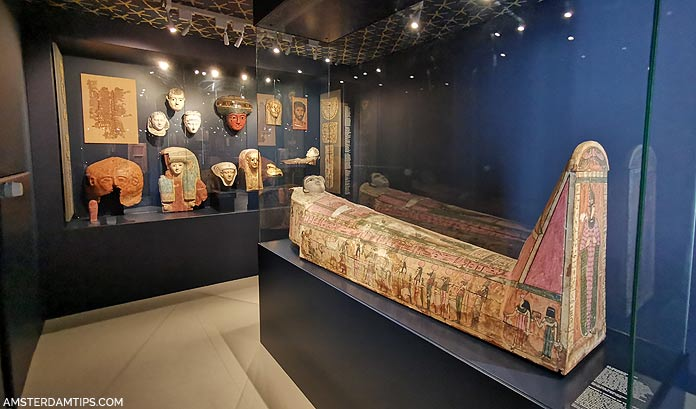
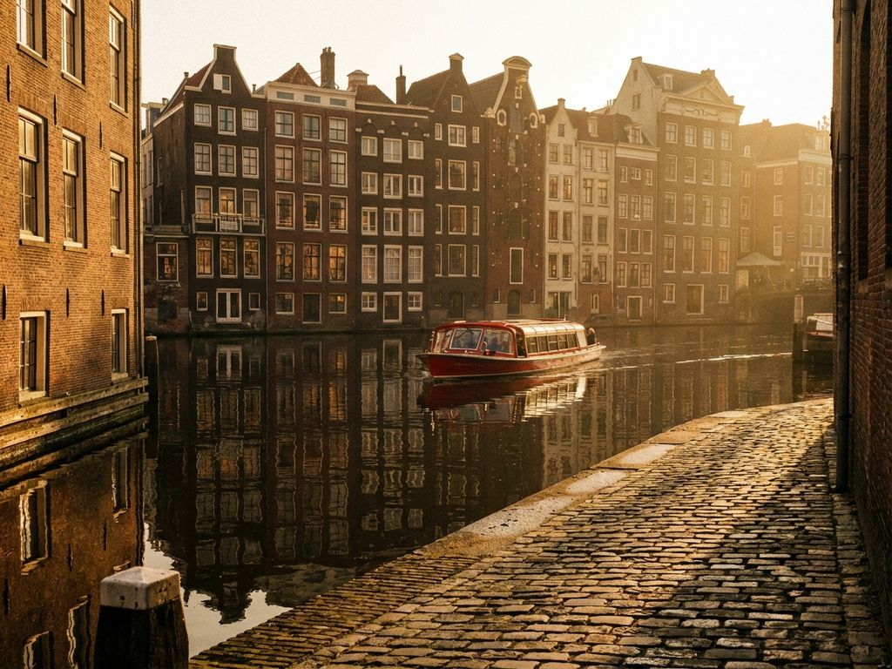

Art in Amsterdam
Amsterdam is famous for paintings, museums and artists during the Dutch Golden Age.


Archaeology
Archaeologists found medieval objects, coins and historical artifacts in canals.
History
Amsterdam grew from a fishing village into a major European city.